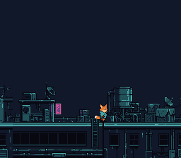

|
OpenSNES
Modern Open-Source SNES Development SDK
|
|
OpenSNES
Modern Open-Source SNES Development SDK
|
A level drawn in the Tiled map editor scrolls as Kit, the fox-kit courier, walks left and right along a row of rooftops at night. The map engine streams only the visible tile columns to VRAM, so the map can be much wider than the screen; the level, its tile properties and its tileset are converted by the build from settings files beside them.

| Button | Action |
|---|---|
| LEFT | Move Kit left (sprite flips, map scrolls) |
| RIGHT | Move Kit right |
Step 1. Design the level in Tiled (8x8 pixel tiles, any width/height up to 16384 tiles in all). Set per-tile properties: attribute (collision), palette (0-7), priority (0-1).
Step 2. Export it as .tmj (JSON).
Step 3. The tileset picture is converted by opensnes-tileset, from its settings file res/roofs.png.toml:
Step 4. The level is converted by opensnes-level, after the tileset whose .map its settings file names (res/rooftops.tmj.toml):
Step 5. The build links the converted data (res/roofs.inc and res/rooftops.inc declare it); mapLoad() takes it — no data.asm.
The level here is one long row of rooftops (2304 pixels, 802 distinct tiles) and Kit is a 32x32 sprite of eight walk frames; both are generated for OpenSNES (CC0, assets/neo-lumen/), and devtools/art_assets/build.py writes res/rooftops.tmj and its tile sheet res/roofs.png from them. Open the .tmj in Tiled to edit the level: each tile of the sheet carries its attribute (FF00 for the roof and the walls under it).
Each tile in the Tiled editor can carry custom properties:
| Property | Tiled Field | SNES Effect |
|---|---|---|
| attribute | Hex string (e.g., "FF00") | Collision type: T_SOLID, T_LADDER, T_SPIKE, etc. |
| palette | Hex string (e.g., "1") | Palette bank (bits 10-12 of tilemap entry) |
| priority | Hex string (e.g., "1") | BG priority bit (bit 13 of tilemap entry) |
opensnes-level stores them in the .b16 (attributes) and .t16 (palette and priority) files.
The map is too large to fit in VRAM. The map engine solves this:
The sprite's position in the map (xloc) is not its screen position. The screen position is xloc - mapGetCameraX(), where mapGetCameraX() is the camera's current offset exported by the map engine.
The sprite cycles through 4 frames (tiles 0, 2, 4, 6). Each 16x16 sprite uses 2 VRAM tiles (top-left + top-right), so frames are spaced by 2. Animation advances every other input frame for natural pacing.
| Module | Why it's here |
|---|---|
| console | consoleInit(), WaitForVBlank(), NMI handler setup |
| sprite | OAM buffer for Kit, a 32x32 sprite |
| dma | DMA transfers for tiles, palette, and map column streaming |
| input | padHeld() for continuous D-pad reading |
| background | BG layer and scroll register configuration |
| map | mapLoad(), mapUpdate(), mapVblank() — the streaming map engine |
Run map_scroll.sfc in luna (opensnes run) or any SNES emulator and scroll with LEFT/RIGHT.